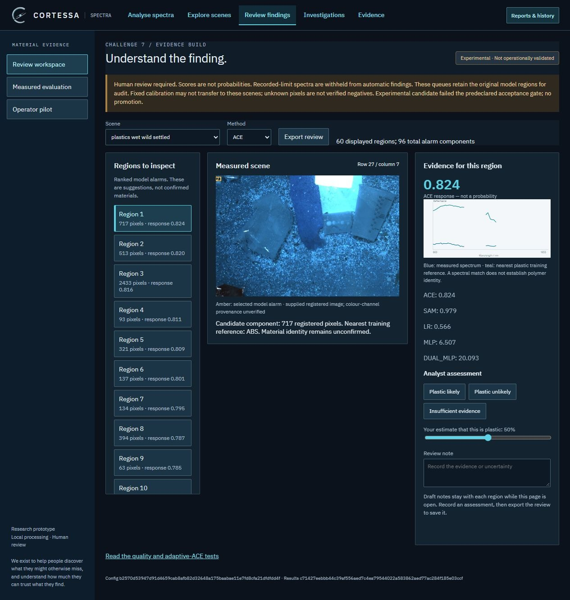
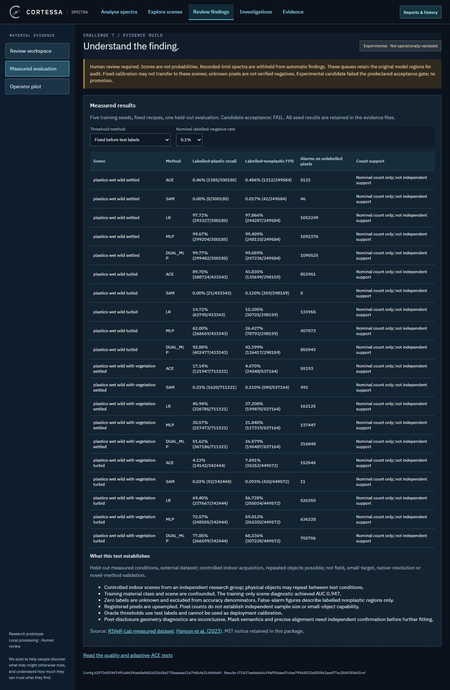

A workspace for evidence review
Measured-data inspection, spectral views, comparator results, review assessments and decision exports. Reproducible experiments support investigation of both successes and failures.
Cortessa / Research & development
Material analysis from hyperspectral measurements, with the evidence kept in view.
A Cortessa R&D arm for spectral analysis. We are developing software to help analysts locate difficult material signals, compare possible explanations and recognise when a measurement cannot support an identification.

01 / The problem
Small patches can share a pixel with their surroundings. Similar materials can produce competing matches. A highlighted region is a starting point for investigation.
Our research focuses on recovering difficult material detections while controlling false alarms and confusion between materials. The intended benefit is better evidence for the analyst's next decision.
That benefit remains a research objective. A performance advantage over established methods has not yet been demonstrated.
Watch Spectra / Three-minute walkthrough
Explore the research prototype in this 3-minute demonstration, with actual interface captures, narrated explanations and English captions.
On a phone, turn your screen sideways and use the player's full-screen control to read the interface and captions more easily. You can also read the transcript below.
An edited walkthrough of the updated prototype interface, captured on 15 November 2026, with synthetic narration and captions included in the picture. Spectra is a research prototype; this demonstration does not establish validated material identification or field performance. Measured data: RIVeR-Lab, © 2023. MIT licence and attribution.
Cortessa Spectra is a research prototype for reviewing hyperspectral measurements. It brings the scene, the spectrum, and the evidence behind a candidate finding into one workspace. In this walkthrough, we will follow a region from its initial alarm to a recorded human assessment.
We begin with a prepared research scene. This example contains plastic objects measured under controlled water conditions. The scene selector lets us move between available measurements, while the method selector chooses the detector output to inspect. An ordinary photograph alone would not provide the spectral information used here.
The list on the left ranks regions for review. Selecting a region highlights its position in amber and updates the evidence panel. These are model alarms, not confirmed identifications. The surrounding scene matters: a strong response can still come from a confusing background or an unreliable calibration.
Now look at the spectral view. Blue shows the measured spectrum; teal shows the nearest plastic training reference. The shape of these curves helps the analyst examine the proposed match. A similar curve does not, by itself, establish a polymer identity. The response score is not a probability.
Changing the scene introduces different backgrounds and visible vegetation. Spectra keeps the selected region, its reference, and the comparator responses together. Agreement can motivate further inspection, but it is not proof. Disagreement is also useful: it points to a finding that needs a closer look rather than an automatic conclusion.
The analyst can mark a region as plastic likely, plastic unlikely, or insufficient evidence. Here, the demonstration records insufficient evidence and adds an explanatory note. That judgement belongs to the reviewer. The export control saves the review as structured data, so the assessment can be retained for follow-up.
The measured evaluation screen compares methods, detections, and false alarms. It also exposes a failed acceptance result. This matters: detecting more labelled plastic is not an improvement if the method also flags the background. These indoor research results have important limitations and do not establish reliable field performance.
Today, Spectra provides a working evidence-review workflow. Reliable material identification across independent scenes, a detection advantage over established methods, and reduced analyst workload remain to be demonstrated. The next step is qualified measured data, fair comparisons, and evaluation criteria fixed before testing.
Cortessa exists to help people discover what they might otherwise miss, and understand how much they can trust what they find. Spectra carries that purpose into material analysis. Explore the research prototype at Cortessa.co.uk.
Inside Spectra / Actual prototype captures
Screenshots from the updated research interface, captured on 14 November 2026. These are real interface views using measured research data.
Tap any screenshot to open the full-size image, then zoom in to inspect the details.
The selected region appears beside its measured spectrum, nearest training reference and comparator responses. The analyst can record an assessment and export the review. Scores are not probabilities; a candidate region is not a confirmed material identification.
Open full-size workspace screenshot
The evaluation view compares methods and records false alarms alongside detections. This experimental candidate failed its acceptance gate. The screen shows a restricted indoor research evaluation: objects may repeat, pixels are upsampled, training class and scene are confounded, and mask alignment remains under investigation. These figures do not establish operational accuracy or independent field performance.
Open full-size evaluation screenshotInterface: Cortessa Spectra. Measured scene data: RIVeR-Lab, Robotics and Intelligent Ground Vehicle Research Laboratory, © 2023. MIT licence and attribution. Screenshots illustrate research functionality, not validated detection performance. No endorsement by the data provider is implied.
02 / Inside the prototype
The research workspace brings measured-data review, spectral inspection and decision export into one workflow.
Explore the measured-data regions prepared for the research workspace. Check where a candidate appears and what surrounds it.
Inspect spectral measurements alongside comparator outputs. Consider whether another material or the background could explain the signal.
Record a review assessment and export it for follow-up. Keep the distinction between a candidate finding and an established identity visible.
Current workflows use prepared research datasets. General instrument import and operational deployment require further development and validation.
03 / Research status · November 2026
Measured-data inspection, spectral views, comparator results, review assessments and decision exports. Reproducible experiments support investigation of both successes and failures.
Small and mixed material signals, confusion between similar materials, and thresholds that remain useful across acquisition conditions.
Improved detection at controlled false-alarm rates on independent measured data, and a measurable reduction in analyst effort.
Spectra is a research prototype. Recent candidates have failed acceptance criteria; no general detection advantage or operational material-identification accuracy is claimed. It is not a validated chemical-safety instrument.
Our next evidence gates are qualified measured datasets, fair comparisons with established methods, and independent evaluation with thresholds fixed before testing.
04 / Practical questions
No. The intended input is a supported hyperspectral measurement with its spectral bands and acquisition information. An ordinary RGB photograph does not contain the measurements used by these workflows.
No. A candidate depends on the available wavelengths, reference information, signal quality and background. Some measurements cannot support a material identity. Universal identification is not a current capability.
Spectra is a separate research application for spectral measurements. It shares Cortessa's emphasis on traceable evidence and human review; the document product's validation results do not establish Spectra's performance.
No. The current build supports research and evaluation. Sensor compatibility, independent performance and usefulness in a real analyst workflow still need to be established for each proposed application.
Part of Cortessa
We exist to help people discover what they might otherwise miss, and understand how much they can trust what they find.
Cortessa brings evidence-led software and research together. Its document-intelligence work helps people interrogate controlled information. Spectra is its R&D arm exploring spectral measurements and material-analysis questions.
Shared values: traceable evidence, explicit limits and human judgement. Each area has its own evidence base and stage of development.
Explore Cortessa05 / Help define the useful problem
We welcome conversations with spectral-data owners, researchers and prospective users about a defined use case, suitable measurements and meaningful evaluation criteria.
We exist to help people discover what they might otherwise miss, and understand how much they can trust what they find.